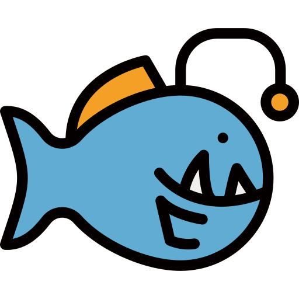

Data üí•
Link to figshare (test with DR1_Full)
DR1_Full
DR2_Full
DR3_Full
Interactive Notebooks üí•
github link ?

Kinetics and Morphologie Changes of Amorphous Solid Water upon Crystalisation (and influence of an imuprity, ethane)
V. Deguin, A. Dawes (S. Green, R. Moat)
Topics: Experimental Astrophysics, Astrochemistry
Techniques: mid-IR Spectroscopy
Job: PhD Part II
Info: 

-
Water ice is ubiquitously present on the surface of interstellar dust grains and is thought to play a key role in the interstellar medium chemistry, where more than 200 molecules have been detected (PhD part 2 - this work). Ice is also a key ingredient enhancing aggregation of micrometre dust in protoplanetary disks (PhD part 1). Investigations of those processes rely on the production of laboratory analogues and have been an intense focus of research since the discovery of Amorphous Solid Water (ASW) in 1935 by Burton and Oliver obtained from water vapor deposition on a cold surface (< 70 K). Subsequent work has put into evidence the highly porous and metastable (with respect to the thermodynamically stable crystaline ice) structure of ASW. However, despite mentions of a glass transition, it is not yet clear how ASW transforms to crystalline ice. Having such knowledge is crucial with the launch of James Web Space Telescope (JWST), that will give scientists unprecedented spatial and spectral resolution that could potentially resolve the two polymorphs.
Infrared Spectroscopy
Resolve the OH stretching mode
Well established Experiment
New methodology - long isotherm scan to resolve subtle changes, kinetics over an extended period of time
Presence of impurities will be investigated
My Corner
Support
or
Chapters in bold (+ ✏) on the left menu are Thesis Chapters, Other pages in the relevant sections are secoundary materials. Chapter 6 and 7 are located in another book (differrent project).
Chapter 1.A : Introduction
1.1 The Dust cycle in the Galaxy
1.2 Synergy Between Experiments, Modelling and Observation in Astronomy through the Prism of Ice
1.3 Amorphous Ices in the Laboratory
1.4 Ice Processing in the Context of Planet Formation
1.5 Thesis Motivation and Aim
1.6 Thesis Outline
Chapter 2.B : Method
2.1 The Portable Astrochemistry Chamber (PAC)
2.1.1 Description
2.1.2 Experimental procedure
2.1.3 Experimental limitations
2.2 Infrared Spectroscopy
Chapter 3 : Investigation of Amorphous Solid Water bulk structure
Chapter 4 : Crystalisation kinetics of ASW
Chapter 5 : Influence of impurity (ethane) on the structure, morphology and crystalisation kinetics of ASW
Chapter 1.B : Introduction
1.1 A brief history of planet formation
1.2 Ice Processing in the Context of Planet Formation
Chapter 2.B : Method
2.1 The Portable Astrochemistry Chamber (PAC)
2.1.1 Description
2.1.2 Experimental procedure
2.1.3 Experimental limitations
2.2 Infrared Spectroscopy
Chapter 6 : Crystalisation kinetics of ASW
Chapter 7 : Influence of impurity (ethane) on the structure, morphology and crystalisation kinetics of ASW
Data üí•
Link to figshare (test with DR1_Full)
DR1_Full
DR2_Full
DR3_Full
Interactive Notebooks üí•

github link ?
No lists of abbreviation as will be directly described in the text:
Exemple: ASW

Those buttons located on the top right corner, open Hypothesis an online commenting tool.
Needs registering (free account)
Anita
Simon
Richard
Note / Question
Notes or questions
Warning
Warning
Info / Idea
Info and Ideas
See also
Reference to other content
Legend üí•
 Supervision team
Supervision team
 Researchers (my field)
Researchers (my field)
 Friends/Colleagues
Friends/Colleagues
 Anyone
Anyone
 Teachers
 Researchers (other fields)
Researchers (other fields)
This web-site is an experiment aimed at communicating research . Communication involve an audience, and there is a whole diapora of possible audiences for this project: In order to communicate, I will leave notes (4 types, cf below) here and there, sometimes with a tag refering to the audience they are adressed to. Feel free to comment them (like I did) using Hypothesis button (top right corner)
formatting is mood dependant and likely to change.
Different methods to write equation, bith can be referred in the following equation list
JupyterBook offer a pdf build option.
not very good though and will require few changes.